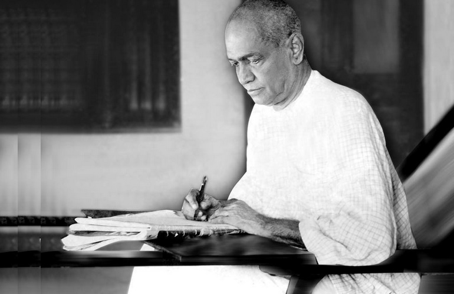

കേരളീയനായ ഒരു മഹാകവിയും വിവർത്തകനുമാണ് വള്ളത്തോൾ നാരായണമേനോൻ. കേരള കലാമണ്ഡലത്തിന്റെ സ്ഥാപകനായ അദ്ദേഹം കേരളത്തിന്റെ തനത് കലയായ കഥകളിയെ പരിപോഷിപ്പിക്കുന്നതിനും ശ്രമിച്ചിട്ടുണ്ട്. കേരള വാല്മീകിയായി വിശേഷിപ്പിക്കപ്പെട്ട വള്ളത്തോൾ ദേശീയ കവിയായി അറിയപ്പെട്ടു.
1878 ഒക്ടോബർ 16-ന് മലപ്പുറം ജില്ലയിലെ തിരൂരിനു സമീപം ചേന്നര ഗ്രാമത്തിൽ വള്ളത്തോൾ കോഴിപ്പറമ്പിൽ കുട്ടിപ്പാറു അമ്മയുടെയും കടുങ്ങോട്ട് മല്ലിശേരി ദാമോദരൻ ഇളയതിന്റെയും മകനായി ജനിച്ചു. അമ്മാവനായിരുന്ന വള്ളത്തോൾ രാവുണ്ണിമേനോന് കീഴിൽ നടന്ന സംസ്കൃതപഠനത്തിനുശേഷം കൈക്കുളങ്ങര രാമവാര്യരിൽനിന്നു തർക്കശാസ്ത്രം പഠിച്ചു. വാല്മീകി രാമായണവിവർത്തനം 1907-ൽ പൂർത്തിയാക്കി. 1908-ൽ ഒരു രോഗബാധയെതുടർന്ന് അദ്ദേഹം ബധിരനായി. ഇതേത്തുടർന്നാണ് 'ബധിരവിലാപം' എന്ന കവിത രചിച്ചത്. 1915-ൽ ചിത്രയോഗം പ്രസിദ്ധീകരിച്ചു. അതേവർഷം കേരളോദയത്തിന്റെ പത്രാധിപനായി.
ഇന്ത്യൻ സ്വാന്തന്ത്ര്യ സമരത്തിൽ ആകൃഷ്ടനായ അദ്ദേഹം ദേശസ്നേഹം തുളുമ്പുന്ന നിരവധി കവിതകൾ രചിച്ചിട്ടുണ്ട്. ഇന്ത്യൻ നാഷണൽ കോൺഗ്രസ്സിന്റെ ചെന്നൈ (1927), കൽക്കത്ത (1928) സമ്മേളനങ്ങളിൽ വള്ളത്തോൾ പങ്കെടുത്തിരുന്നു.
അവസാനകാലത്ത് വാർദ്ധക്യസഹജമായ അസുഖങ്ങൾ അലട്ടിയ വള്ളത്തോൾ, 1958 മാർച്ച് 13-ന് 79-ാം വയസ്സിൽ എറണാകുളത്തെ മകന്റെ വീട്ടിൽ വച്ച് അന്തരിച്ചു. മൃതദേഹം പൂർണ ഔദ്യോഗിക ബഹുമതികളോടെ ചെറുതുരുത്തിയിലെ കേരള കലാമണ്ഡലം വളപ്പിൽ സംസ്കരിച്ചു.
എന്റെ ഗുരുനാഥൻ
ലോകമേ തറവാട്, തനിക്കി ചെടികളും
പുല്കളും പുഴുക്കളും കൂടിതന് കുടുംബക്കാര്
ത്യഗമെന്നതേ നേട്ടം, താഴ്മതാൻ അഭ്യുന്നതി,
യോഗവിത്തെവം ജയിക്കുന്നിതെൻ ഗുരുനാഥൻ
താരകമണിമാല ചാർത്തിയാലതും കൊള്ളം
കാറണിചെളി നീളെ പുരണ്ടാലതും കൊള്ളം
ഇല്ലിഹ സംഗം ലേപമെന്നിവ,സമ സ്വച്ഛ-
മല്ലയോ വിഹായസവണ്ണമെൻ ഗുരുനാഥൻ
ദുർജ്ജന്തുവിഹീനമാം ദുർല്ലഭ തീര്ത്ഥഹ്രദം
കജ്ജലോൽഗമമില്ലാത്തൊരു മംഗളദീപം
പാമ്പുകൾ തീണ്ടിടാത്ത മാണിക്യമഹാനിധി,
പാഴ് നിഴലുണ്ടാക്കാത്ത പൂനിലാവെന്നാചാര്യൻ
ശസ്ത്രമെന്നിയെ ധർമ്മസംഗരം നടത്തുന്നോൻ
പുസ്തകമെന്യേ പുണ്യാദ്ധ്യാപനം പുലര്ത്തുന്നോൻ
ഔഷധമെന്യെ രോഗം ശമിപ്പിപ്പവൻ,ഹിംസാ-
ദോഷമെന്നിയേ യജ്ഞം ചെയവവനെന്നാചര്യൻ
ശാശ്വതമഹിംസയാണമ്മഹാത്മാവിൻ വ്രതം
ശാന്തിയാണവിടേയെക്കു പരദേവത പണ്ടേ
ഓതുമാറണ്ടുദ്ദേഹം”മഹിംസാ മണിച്ചട്ട-
യേതുടവാളിൻ കൊടുവായ്ത്തല മടക്കാത്തു”
ഭാര്യയെക്കണ്ടെത്തിയ ധർമ്മത്തിൻ സല്ലാപങ്ങ-
ളാര്യസത്യത്തിൻ സദസ്സിങ്കലെ സ്സംഗീതങ്ങൾ
മുക്തിതൻ മണിമയക്കാൽത്തളക്കിലുക്കങ്ങൾ
മുറ്റുമെൻ ഗുരുവിന്റെ ശോഭവചനങ്ങൾ
പ്രണയത്താലേ ലോകം വെല്ലുമീയോദ്ധവിന്നോ
പ്രണവം ധനുസ്സാത്മവാശുഗം,ബ്രഹ്മ്മം ലക്ഷ്യം
ഓംകരത്തെയും ക്രമാലലിയിച്ചലിയിച്ചു
താൻ കൈക്കൊള്ളുന്നു തുലോം സൂക്ഷ്മമാമംശം മാത്രം
ക്രിസ്തുദേവൻറെ പരിത്യാഗ ശീലവും,സാക്ഷാൽ
കൃഷ്ണനാം ഭഗവാന്റെ ധർമ്മരക്ഷോപായവും,
ബുദ്ധന്റെയഹിംസയും, ശങ്കരാചര്യരുടെ
ബുദ്ധിശക്തിയും, രന്തിദേവന്റെ ദയാവായ്പും
ശ്രീഹരിശ്ചന്ദ്രന്നുള്ള സത്യവും മുഹമ്മദിന് സ്ഥൈര്യവു,
മൊരാളില്ച്ചേര്ന്നൊത്തുകാണണമെങ്കില്
ചെല്ലുവിന്, ഭവാന്മാരെന് ഗുരുവിന് നികടത്തില്
അല്ലായ്കിലവിടുത്തെ ചരിത്രം വായിക്കുവിന്.
ഹാ! തത്ര ഭവൽപ്പാദമൊരിക്കൽ ദർശിച്ചെന്നാൽ-
ക്കാതരനതിധീരൻ കർക്കശൻ കൃപാവശൻ
പിശുക്കൻ പ്രദാനോൽക്കൻ പിശുനൻ സുവചന-
ന; ശുദ്ധൻ പരിശുദ്ധ; നലസൻ സദായാസൻ
ആതതപ്രശമനാമത്തപസ്വിതൻ മുന്നി-
ലാതതായി തൻ കൈവാൾ കരിം കൂവള മാല്യം
കൂർത്തദ്രംഷ്ടകൾ ചേർന്ന കേസരിയൊരു മാൻകു-
ഞ്ഞാ; ർത്തേന്തിതടം തല്ലും വൻകടൽ കളിപ്പൊയ്ക
കാര്യചിന്തനചെയ്യും നേരമെന്നേതവിന്ന്
കാനനപ്രദേശവും കാഞ്ചന സഭാതലം;
ചട്ടറ്റ സമാധിയിലേർപ്പെടുമായോഗിക്ക്
പട്ടണ നടുത്തട്ടും പർവത ഗുഹാന്തരം
ശുദ്ധമാം തങ്കത്തെത്താനല്ലയോ വിളയിപ്പ
തിദ്ധർമ്മകൃഷകന്റെ സൽക്കർമ്മം വയൽതോറും?
സിദ്ധനാമവിടുത്തെ ത്തൃക്കണ്ണോ, കനകത്തെ
യിദ്ധരിത്രിതൻ വെറും മഞ്ഞമണ്ണായി ക്കാണ്മു
ചാമരചലനത്താലിളിച്ചുകാട്ടും പിശാ-
ചമഹാവിരക്തൻ പൂജ്യസാമ്രാജ്യശ്രീയും
ഏതു പൂങ്കുഴലിന്നുമഴൽ തോന്നയാവനാരീ
സ്വാതന്ത്ര്യ ദുര്ഗ്ഗാധ്വാവിൽ പട്ടുകൾ വിരിക്കുന്നു
അത്തിരുവടിവല്ല വൽക്കലത്തുണ്ടുമുടു-
ത്തർദ്ധനഗ്നനായല്ലോ മേവുന്നു സദാകാലം!
ഗീതയ്ക്കു മാതാവായ ഭൂമിയെ ദൃഡമിതു-
മാതിരിയൊരു കർമ്മയോഗിയെ പ്രസവിക്കു-
ഹിമവദ്വിന്ധ്യാചല മദ്ധ്യദേശത്തെ കാണൂ
ശമമേ ശീലിച്ചെഴുമിത്തരം സിംഹത്തിനെ-
ഗംഗയാറൊഴുകുന്ന നാട്ടിലേ ശരിക്കിത്ര
മംഗളം കായ്ക്കും കല്പപാദപമുണ്ടായി വരൂ!
നമസ്തേ ഗതതർഷ! നമസ്തേ ദുരാർധഷ!
നമസ്തേ സുമഹാത്മൻ! നമസ്തേ ജഗദ്ഗുരോ
മാതൃവന്ദനം
വന്ദിപ്പിൻ മാതാവിനെ, വന്ദിപ്പിൻ മാതാവിനെ
വന്ദിപ്പിൻ വരേണ്യയെ, വന്ദിപ്പിൻ വരദയെ
എത്രയും തപശ്ശക്തി പൂണ്ട ജാമദഗ്ന്യന്നു
സത്രാജിത്തിനു പണ്ടു സഹസ്രകരൻ പോലെ
പശ്ച്ചിമരത്നാകരം പ്രീതിയാൽ ദാനം ചെയ്ത
വിശ്വൈകമഹാരത്നമല്ലീ നമ്മുടെ രാജ്യം?
വന്ദിപ്പിൻ മാതാവിനെ, വന്ദിപ്പിൻ മാതാവിനെ
വന്ദിപ്പിൻ സമുദ്രാത്മഭൂവാമീ ശ്രീദേവിയെ
പച്ചയാം വിരിപ്പിട്ട സഹ്യനിൽ തല വെച്ചും
സ്വച്ഛാബ്ധിമണൽത്തിട്ടാം പാദോപധാനം പൂണ്ടും
പള്ളികൊണ്ടീടുന്ന നിൻ പാർശ്വയുഗ്മത്തെക്കാത്തു-
കൊള്ളുന്നു,കുമാരിയും ഗോകർണ്ണേശനുമമ്മേ
വന്ദിപ്പിൻ മാതാവിനെ, വന്ദിപ്പിൻ മാതാവിനെ
വന്ദിപ്പിനുപാസ്യരായുല്ലൊർക്കുമുപാസ്യയെ
ആഴിവീചികളനുവേലം വെൺനുരകളാൽ
ത്തോഴികൾ പോലെ, തവ ചാരുതൃപ്പാദങ്ങളിൽ
തൂവെള്ളിച്ചിലമ്പുകളിടുവിക്കുന്നു; തൃപ്തി
കൈവരാഞ്ഞഴിക്കുന്നു! പിന്നെയും തുടരുന്നു
വന്ദിപ്പിൻ മാതാവിനെ, വന്ദിപ്പിൻ മാതാവിനെ
വന്ദിപ്പിനനന്യസാധാരണസൗഭാഗ്യയെ!
എന്റെ ഭാഷ
സന്നികൃഷ്ടാബ്ദിതന് ഗംഭീരശൈലിയും
സഹ്യഗിരിതന് അടിയുറപ്പും
ഗോകര്ണ്ണ ക്ഷേത്രത്തിന് നിര്വൃതികൃത്വവും
ശ്രീകന്യമാലിന് പ്രസന്നതയും
ഗംഗപോലുള്ള പേരാറ്റിന് വിശുദ്ധിയും
തെങ്ങിളം കായ്നീരിന് മാധുര്യവും
ചന്ദനൈലാലവങ്കാദിവസ്തുക്കള് തന്
നന്ദിത പ്രാണമാം തൂമണവും
സംസ്കൃത ഭാഷതന് സ്വാഭാവികൌജസ്സും
സാക്ഷാല് തമിഴിന്റെ സൌന്ദര്യവും
ഒത്തുചേര്ന്നുള്ളൊരു ഭാഷയാണെന് ഭാഷ
മത്താടി കൊള്കയാണഭിമാനമേ നീ
മിണ്ടി തുടങ്ങാന് ശ്രമിയ്ക്കുന്ന പിഞ്ചിളം
ചുണ്ടിന്മേല് അമ്മിഞ്ഞാ പാലോടൊപ്പം
അമ്മയെന്നുള്ള രണ്ടക്ഷരമല്ലയോ
സമ്മേളിച്ചിടുന്നതൊന്നാമതായ്
മറ്റുള്ള ഭാഷകള് കേവലം ധാത്രിമാര്
മര്ത്യനു പെറ്റമ്മ തന് ഭാഷതാന്
മാതാവിന് വാത്സല്ല്യ ദുഗ്ദം പകര്ന്നാലെ
പൈതങ്ങള് പൂര്ണ്ണ വളര്ച്ച നേടൂ
അമ്മതാന് തന്നെ പകര്ന്നു തരുമ്പോഴെ
നമ്മള്ക്കമൃതുമമൃതായ് തോന്നൂ..